A quick guide to every feature — from the start panel and today’s puzzle to sticky numbers, notes, hints, statistics, and the settings that change how the game plays. Written for version 1.7.
Fill the 9×9 grid so that every row, every column, and every 3×3 box contains the digits 1–9 with no repeats. Some cells start filled — those are your clues.
Every puzzle in Simply Sudoku has exactly one solution, so you can always get there by logic alone. You never have to guess.
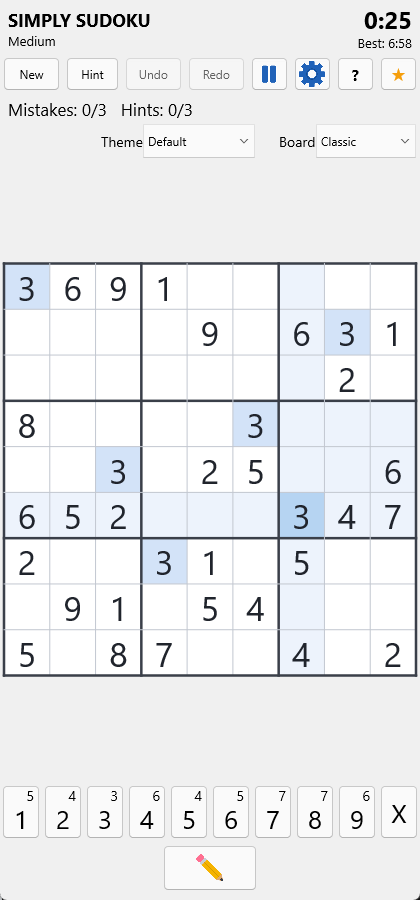
After a brief splash, Simply Sudoku opens on the start panel — the one screen that offers every way to begin. From top to bottom:
The same panel is what New opens during a game, and what a finished game’s New Game button brings you back to. Tap the round X (or Continue) to go back to the board you were on.
Never lose a game by accident: if you start something new while a game you’ve actually touched is in progress, Simply Sudoku asks first — Start a new game? Your current game will be lost. Decline and you’re back where you were. A freshly dealt puzzle you only looked at is replaced without asking.
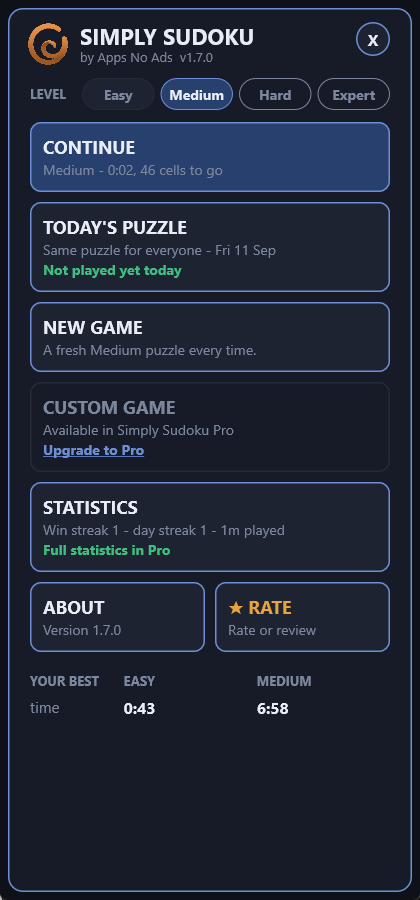
Every day there is one puzzle per level that everyone gets — the same board on every phone, tablet and PC in the world, in both editions. Tap TODAY’S PUZZLE on the start panel; while you play, the line under the title reads Medium · Daily · Fri 11 Sep so you always know which game you’re in.
The card on the start panel keeps score for you: Not played yet today, or your time once you’ve solved it. Compare with a friend, or make it part of the morning routine — a new one arrives at midnight, local time.
Included in the free edition for Easy and Medium; Hard and Expert dailies, and the 16×16 dailies, come with Pro.
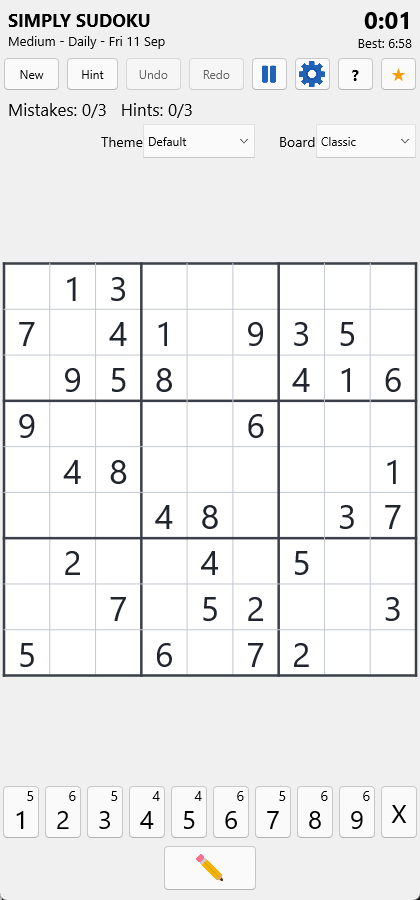
The CUSTOM GAME card has a seed box. Type anything — coffee, a date, a lucky number — pick a level, and tap Press here to begin. That seed and level always deal exactly the same puzzle, on every platform, so you can share a seed with a friend and race the same board, or come back to a favourite.
A number of up to nine digits is used as-is, so the seed you see on screen (the game shows Seed 531882 under the title) reads straight back into the box; a word is turned into a number for you. Because a custom game can be replayed with the answer known, it never sets a best time — it does count in your statistics.
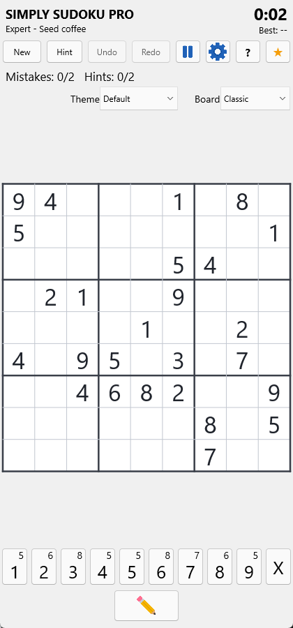
Tap any cell and the board helps you scan it: its row, column, and 3×3 box are highlighted, and every cell holding the same number lights up too — perfect for spotting where a digit can still go.
Your original clues and the numbers you enter are always easy to tell apart. The header shows the game’s level and mode on the left and the clock and your best on the right; the row of buttons underneath is New · Hint · Undo · Redo · ⏸ Pause · ⚙ Settings · ? About · ★ Rate, and the line below it tracks mistakes and hints.
Two ways to place a digit: tap a cell to select it, then tap a number on the keypad — or use the sticky pen (below). On a computer you can also use the arrow keys to move and 1–9 to type.
Erase: tap the selected cell’s number again to clear it, or press 0 / Delete / Backspace. Each keypad button also shows a small remaining-count badge — how many of that digit are still left to place — counting down to zero as you fill the grid.
When you want to place a lot of the same digit, make it “sticky.” Press and hold a number button for about half a second — it turns amber to show it’s now your active pen. Every empty cell you then tap gets that digit, so you can sweep through all the 7s (say) without reselecting the number each time.
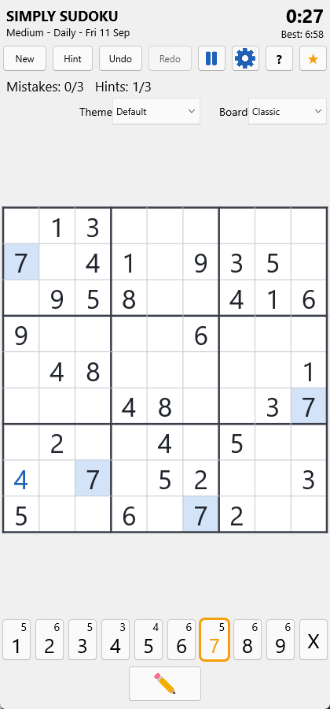
Tap the pencil button (or press N) to enter Notes mode — the button stays pressed while it’s on. Now tapping numbers pencils small candidates into a cell instead of placing a final answer. When you later place a correct digit, Simply Sudoku automatically clears that candidate from the row, column, and box for you.
Stuck? Tap Hint (or press H). After a quick confirm, one correct digit appears in green on a pale-green cell, and an unobtrusive bar asks “Keep this hint?” — Keep commits it, Undo removes it.
Either way it counts toward your hint limit, which depends on difficulty (Easy allows the most; Expert the fewest). When your hints are used up, the button disables.
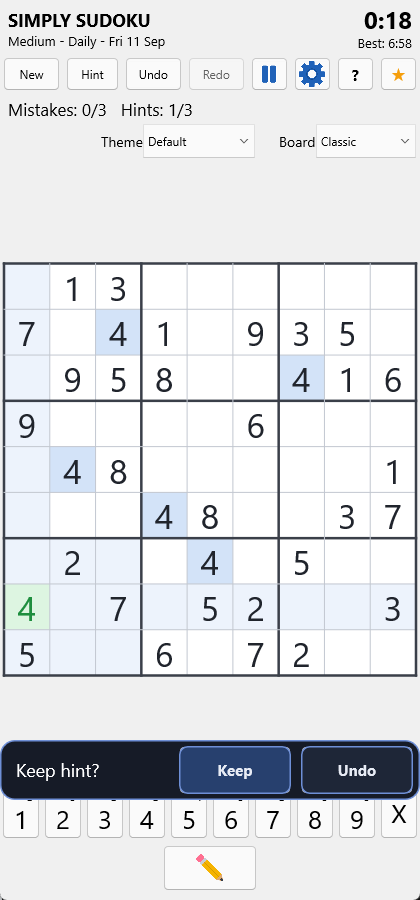
Undo and redo are unlimited — step back and forward through your moves with the on-screen buttons or Ctrl+Z / Ctrl+Y. A timer runs while you play, and Simply Sudoku records your best time for each level, shown in the header and on the start panel and celebrated when you beat it. (Random and daily games set best times; custom games don’t, since they can be replayed.)
By default, a wrong entry is shown in red, and the status line tracks Mistakes: used / max. Each difficulty has a mistake limit — reach it and the game ends with Game Over, where you can Retry the same puzzle or start a New Game. Prefer no safety net at all? See the next section.
In Settings, switch off “Highlight wrong numbers in red” and tap Apply for a pure challenge: mistakes are no longer shown in red, the mistake counter disappears, and you can’t lose on the mistake limit.
Instead, a ✓ Check button appears. It stays disabled until every cell is filled, so you complete the whole puzzle first, then check it in one go. If it’s right, you win; if not, a “Not quite right” message lets you Keep Trying or Quit.
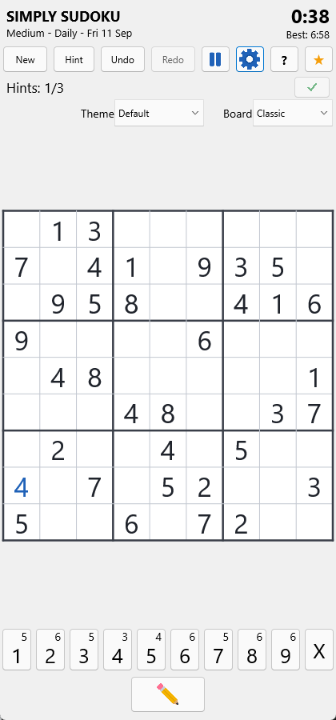
Tap ⏸ Pause to stop the clock — the board hides behind a “Paused” panel you tap to resume. The game also pauses automatically whenever you switch away from the app, and resumes when you come back. (A pause you started by hand stays paused until you resume it yourself.) The clock also stops whenever the start panel, Settings or Statistics is open.
Want to close the app and finish later? Just close it. An unfinished game is always saved when Simply Sudoku goes to the background or the window closes, and the next launch offers it back as CONTINUE on the start panel — board, pencil notes, timer and mistakes exactly as you left them. (Undo history isn’t kept across launches.) If you’ve turned on Start a game right away at launch, a WELCOME BACK card asks whether to Continue or start a New Game instead of silently resuming. Either way, your game stays only on your device.
Tap STATISTICS on the start panel. Three tiles lead: WIN STREAK (wins in a row — a loss or an abandoned game resets it), DAY STREAK (consecutive calendar days with at least one win) and TIME PLAYED, each with its best.
In Pro the page continues per level — pick a pill for played, won, lost, abandoned, win rate, perfect (no mistakes and no hints), best, average, last and a trend (▼ faster or ▲ slower than your previous three wins), plus average mistakes and hints — then a LAST TEN strip (green win, red loss, grey abandon, newest on the left) and LIFETIME totals. Reset statistics clears the page after a confirmation; best times are kept.
Every edition records everything. The free edition shows the three tiles and a Full statistics card; upgrade to Pro on the same device and your history is already there.
What counts as “abandoned”? Replacing a game you’ve actually worked on — an entry, a note, a hint or a mistake — with a new one. A freshly dealt puzzle you only looked at doesn’t count.
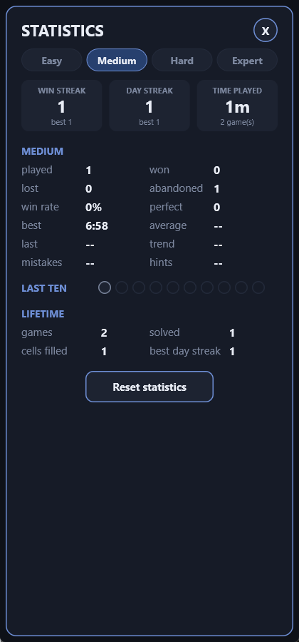
Tap ⚙ in the top bar. Settings is a full page in the same look as the start panel, with a one-line explanation under each row. Nothing changes until you tap Apply; Cancel or the X leaves everything as it was.
Themes and board looks aren’t in Settings — they’re the two dropdowns on the main screen (below).
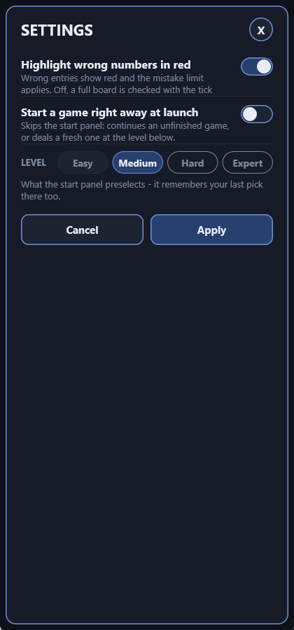
Two dropdowns on the main screen set the mood. Theme restyles the whole app; Board recolours just the 9×9 grid. The free edition has the Default and Dark themes and the Classic, Midnight and High-Contrast boards. Pro has all ten themes (light, dark, warm, high-contrast and more) and all twelve board looks — Classic, Paper, Mint, Slate, Rose, Lavender, Sunset, Midnight, Forest, Charcoal and more.
Mix and match to taste; your choices are remembered next time. The start panel, Settings and the dialogs keep their own dark look whatever theme you pick — only the board and toolbar follow it.
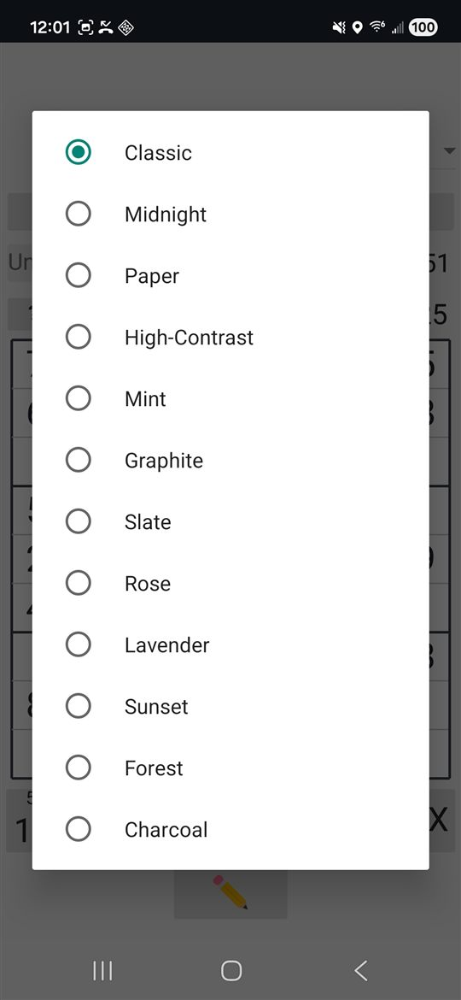
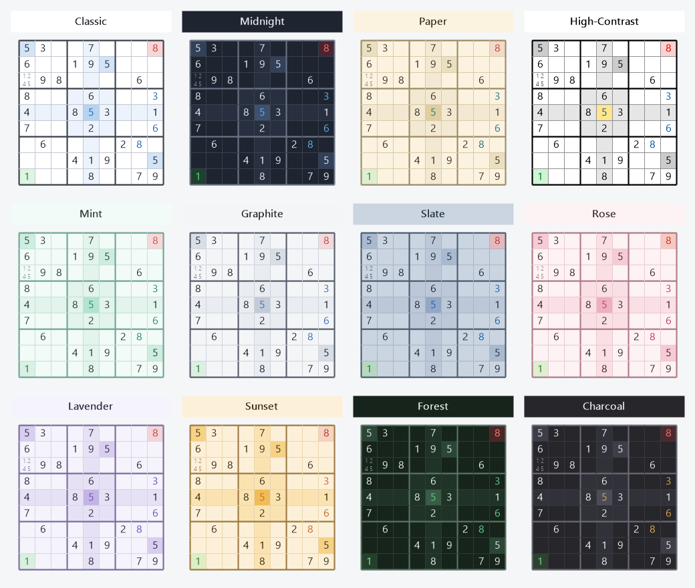
In Pro, turn your phone sideways and Simply Sudoku reflows to a two-column layout — the board on one side, a phone-style 3×3 keypad on the other. Tap the ◀ / ▶ arrow in the keypad to swap the board and controls to the other side, so the keypad falls under your thumb whether you’re left- or right-handed. Your chosen side is remembered. The free edition plays in portrait only.
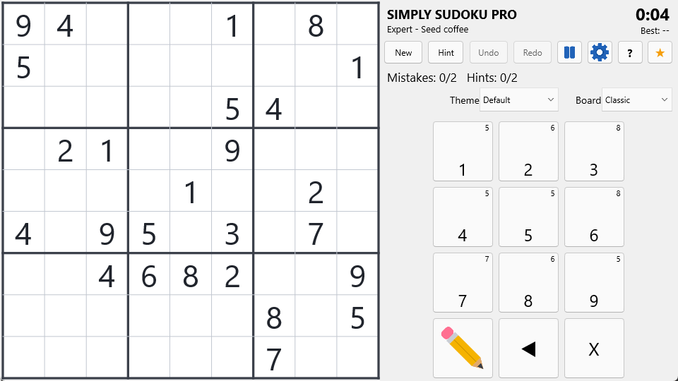
Simply Sudoku works completely offline and stores your game, best times, statistics and settings only on your device. On Android, the app also blanks its preview in the app-switcher by default (which also blocks screenshots) so a paused puzzle can’t be studied off the clock. Want screenshots anyway? In Pro, turn on “Allow screenshots” in Settings.
The amber ★ in the top bar (and ★ RATE on the start panel) opens a small card with ★ Rate this app, Write a review (where the store has a separate page for it) and Send feedback. The same three appear on the Congratulations! card after a win. Rating takes you to the app’s store page; Send feedback drafts an email in your own mail app with the app version filled in — Simply Sudoku itself sends nothing and opens no connection.
Very occasionally — after a personal best or a flawless Medium-or-harder solve, and never more than a few times ever — the app may ask for a rating through the store’s own review prompt. If you’ve rated already or would rather not be asked, it stops.
Simply Sudoku is free with no limits on how much you play. Simply Sudoku Pro is a separate edition on the same stores — one small payment, no subscription, nothing to unlock inside the app. The free edition marks the Pro-only cards Available in Simply Sudoku Pro with an Upgrade to Pro link that opens the Pro listing; that link, the same line in About, and a one-line note after a few Medium wins are the only places you’ll ever see it.
| Free | Pro | |
|---|---|---|
| Levels | Easy, Medium | Easy, Medium, Hard, Expert |
| Board size | 9×9 | 9×9 and 16×16 (hex 0–F, pinch to zoom) |
| Today’s puzzle | Easy, Medium | All four levels, both boards |
| Custom (seeded) games | — | ✓ |
| Statistics | Streak tiles | Full page |
| Themes / board looks | 2 / 3 | 10 / 12 |
| Landscape play | — | ✓ |
| Allow screenshots | — | ✓ |
| Ads, accounts, tracking, subscriptions | None | None |
See the full comparison on the Simply Sudoku page.
| Key | Action |
|---|---|
| Arrows | Move selection |
| 1–9 | Enter digit (or note, in Notes mode) |
| 0 / Delete / Backspace | Erase cell |
| N | Toggle notes mode |
| H | Hint |
| Ctrl+Z / Ctrl+Y | Undo / Redo |
The #1 way to help — bigger than a coffee
A quick rating and review is the single most powerful thing you can do to help — and it’s completely free.
Simply Sudoku has no ads and no advertising budget. It can’t pay to appear on the app stores — it only gets noticed when players like you leave a review. Every rating pushes it higher in search, helps new people discover an honest, ad-free game, and keeps it growing without spending a cent on ads. Great reviews are our advertising.
Already left a review? Thank you — it genuinely makes the difference. Telling a friend helps just as much. 🙂
Live now on both Google Play and the App Store.